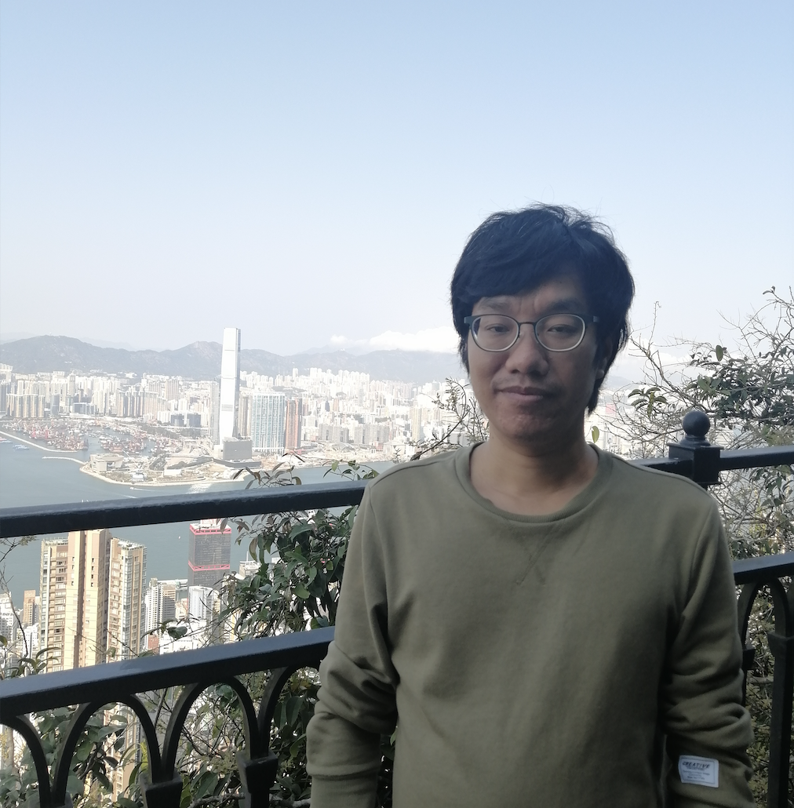

|
Xiongjun Zhang
|
 |
Associate Professor
School of Mathematics and Statistics
Central China Normal University
Wuhan 430079, P.R. China
Email: xjzhang@ccnu.edu.cn
|
My ORCID
My Google Scholar
Research Areas
Image Processing: Image restoration by optimization methods
Tensor Optimization: Low-rank and sparse tensor optimization, tensor decomposition and their applications in imaging sciences
Machine Learning: Multitask learning
|